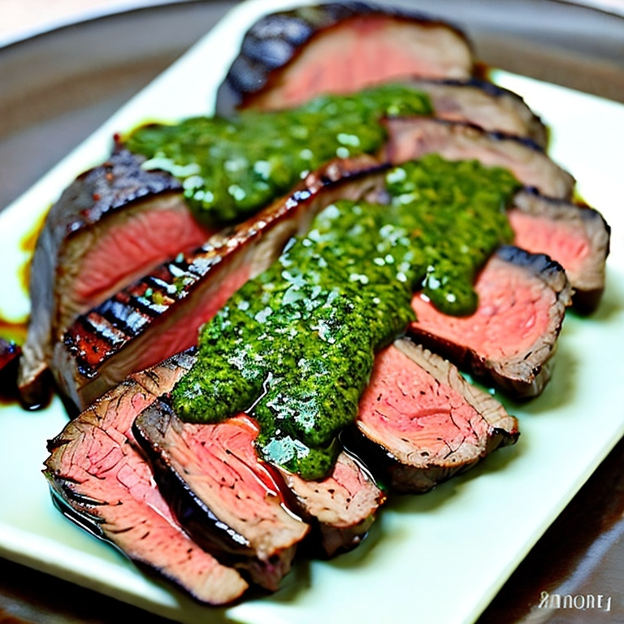
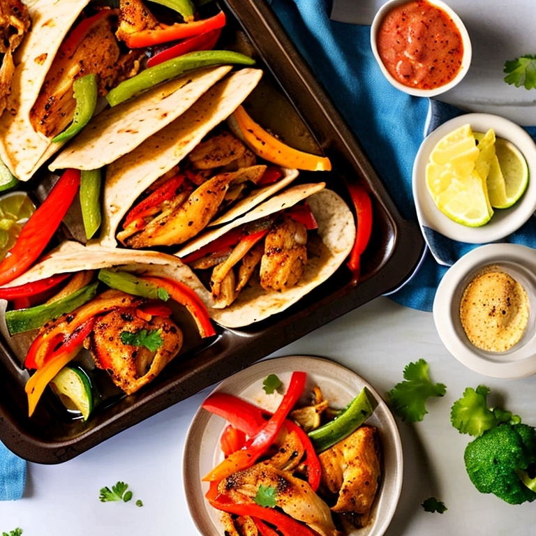
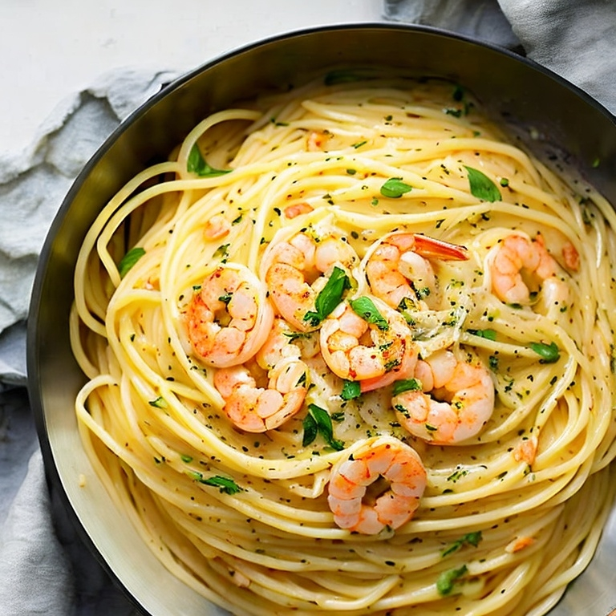

Grilled Steak with Chimichurri Sauce

This grilled steak recipe is packed with flavor thanks to the zesty chimichurri sauce made with fresh parsley, garlic, and red pepper flakes.
Get the Recipe
Sheet Pan Chicken Fajitas

These easy sheet pan chicken fajitas are perfect for a quick and healthy dinner. Simply toss together chicken, peppers, and onions with fajita seasoning and bake in the oven.
Get the Recipe
Lemon Garlic Shrimp Linguine

This flavorful shrimp linguine recipe is the perfect balance of tangy lemon and savory garlic. It's easy to make and ready in just 20 minutes!
Get the Recipe